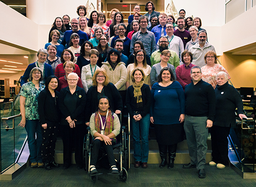
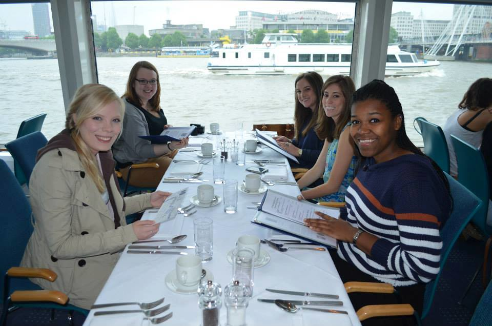

Feedback of Murillo Productions
“I am thrilled with the fine art piece I purchased from Murillo Productions. The quality and attention to detail are remarkable. The entire process, from browsing their portfolio to receiving the artwork, was seamless and enjoyable.”
Emily S.
“As an aspiring artist, I benefited immensely from the networking opportunities provided by Murillo Productions. The connections I made and the mentorship from the senior staff at The University of the Arts have been invaluable to my career.”
Michael T.
“The variety of mediums offered by Murillo Productions is impressive. They created a series of illustrations for my book, and each piece was unique and beautifully crafted. Their creativity and professionalism are unparalleled.”
Sophia L.
“Working with Murillo Productions was a fantastic experience. Their team is incredibly talented and dedicated. They handled my project with utmost care, delivering high-quality results that truly stand out.”
David R.
These reviews reflect the high standards and exceptional service provided by Murillo Productions.